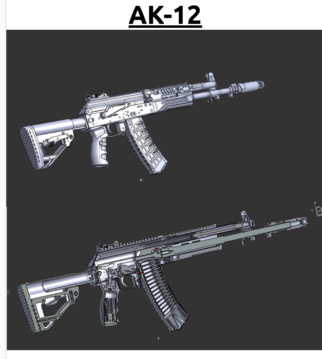
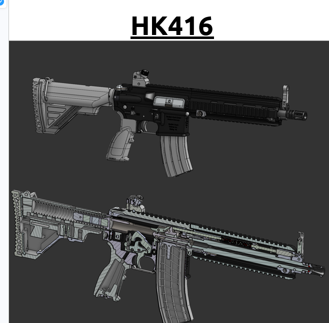
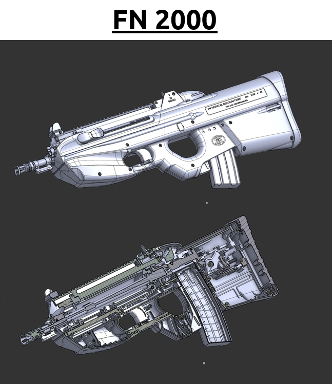
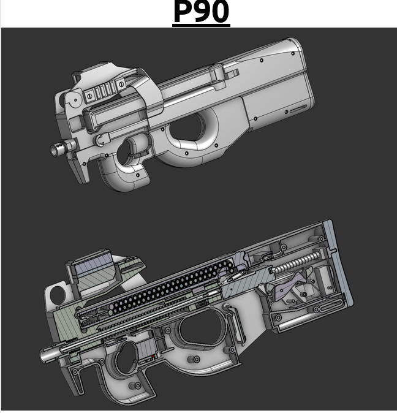
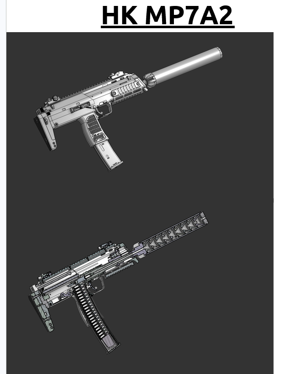
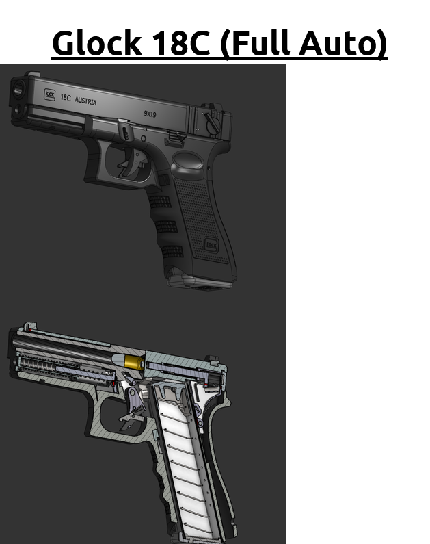
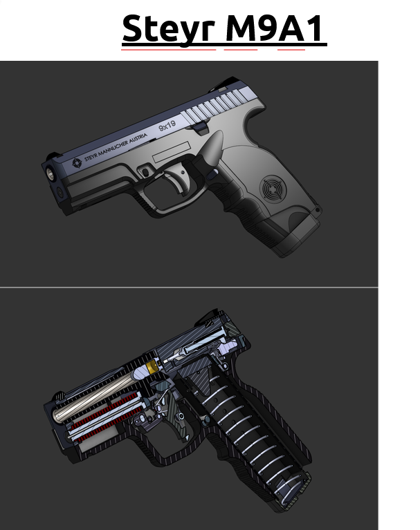

TTM CAD Reference Library
A curated engineering archive of complete, high-detail CAD models — every platform built part-by-part, from receiver architecture and bolt carrier groups down to pins, springs, and fire-control components. Full exterior studies paired with internal cutaways, developed in-house at TTM alongside selected reference designs, and maintained as a single controlled document for research, design study, and manufacturing reference.
- 30+Platforms documented
- 2×Views per platform — exterior & cutaway
- 4Classes — sidearms to machine guns
From the archive
Seven entries cleared for public preview. Each library entry pairs a finished exterior study with a full internal cutaway.







What the library covers
Rifles & carbines
Modern service rifles and bullpup platforms — receiver architecture, gas systems, and furniture studies.
SMGs & PDWs
Compact platforms with full internal mechanism cutaways, from bolt carriers to feed geometry.
Machine guns
Belt-fed and magazine-fed support weapons documented at assembly level.
Sidearms
Service pistols and machine pistols — slide, frame, and fire-control group studies.
Provenance. The library consists primarily of original TTM CAD work, supplemented by selected reference designs. Every entry is reviewed before inclusion and documented in a consistent two-view format.
Distribution. The library is issued as a single controlled PDF document. Access is granted per request and per revision — it is not publicly downloadable.
Request the full library
Tell us who you are and what you're working on. Requests are reviewed individually; approved applicants receive the current revision by email.
- 30+ documented platforms in one archive
- Exterior + cutaway views for every entry
- Updated as new studies are completed